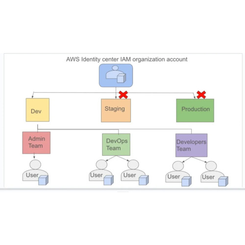

I am a Cloud & DevOps Engineer and Business Operations Leader architecting scalable, resilient environments for SaaS, FinTech, and Manufacturing ecosystems. Rather than treating technical infrastructure and organizational execution as separate silos, I build end-to-end pipelines that ensure high throughput, zero defects, and sustained growth.
Recruiters, engineering managers, and clients can interact directly with simulated production tooling, inspect Infrastructure as Code, or verify cloud metrics.
"Most leaders view physical production, cloud engineering, and organizational operations as separate disciplines. I view them as the exact same discipline applied to different media."
Bridging the gap between software delivery velocity and bottom-line infrastructure viability through modular, reproducible architectures.
Treating human workflows, community acceleration, and operational execution with the same systematic rigor as distributed systems.
Real-world cloud architectures, systems simulation tooling, container environments, and full-stack operational platforms built or collaborated on.
Production-grade Infrastructure as Code (IaC) provisioning an isolated AWS VPC, Amazon EKS (Kubernetes) cluster, RDS Multi-AZ database, and Route53 DNS, fully automated with GitHub Actions CI/CD.
Built a CLI tool simulating core AWS VPC functionalities locally using Linux kernel primitives: network namespaces, virtual ethernet (veth) pairs, iptables NAT, VPC Peering, and Security Groups in Python.
Engineered end-to-end DevOps and application infrastructure for an AI-powered resume optimization tool: Express server, multi-stage Docker builds, GitHub Actions, Railway deployment, and Prisma PostgreSQL migration.
Containerization workflows and kernel resource monitoring: multi-tier application packaging, custom container metrics extraction, Nginx reverse proxy configuration, and safe process termination pipelines.

Security & IAMArchitected least-privilege enterprise IAM policy matrices, boundary permissions, and audit trails to prevent credential escalation, enforce compliance, and reduce attack surfaces across multi-account AWS environments.
Comprehensive threat analysis and vulnerability simulation on cloud environments. Modeled attack vectors against AWS infrastructure, designed automated detection alarms, and built remediation runbooks.
Extensive enterprise Linux automation repository: HAProxy load balancing with SSL termination, automated Nginx deployment, server health checks, log rotation, and network debugging scripts.
Designed and built the multi-page digital ecosystem for ProLaunch Group, showcasing cloud services, career acceleration programs, and workforce development modules with responsive modern UX.
Directed the full commercial and operational lifecycle: managed outsourced manufacturing partners, streamlined fulfillment logistics, steered GTM execution, and set up automated AI business workflows.
A battle-tested stack spanning cloud infrastructure, automation pipelines, systems administration, and executive business operations.
Over a decade of progressive impact spanning digital engineering, operational leadership, and community growth.
Trusted by CEOs, Senior Engineers, and technical peers across SaaS, employment acceleration, and cloud operations.
I recommend Mary-Queen for any Cloud engineering position at your business. She has led teams and, along with that, brings an energy and dependability that make her crucial to our joint venture. She did an excellent job of staying up to date on software developments and thus finding new solutions. She had the most extensive and diverse knowledge of software at our venture, and others even sought her out for advice. A reliable and highly capable employee, I can’t recommend her highly enough.
It’s always a pleasure working with Mary-Queen. Her exceptional organisational skills, coupled with a keen eye for detail, ensure every task is handled with precision. Whether managing communications, streamlining administrative processes, or handling DevOps projects. Mary-Queen consistently delivers above expectations. Her adaptability and professionalism are second to none. I strongly recommend her.
I've had the pleasure of working alongside Mary-Queen and have consistently been impressed by her deep passion for technology and innovation. Whether it's the latest tools, frameworks, or industry trends, Mary-Queen is always ahead of the curve and eager to share insights with the team. Her enthusiasm is contagious and often inspires others to explore new approaches and solutions. Beyond just being a tech enthusiast, she is also a fantastic collaborator, always willing to jump in, solve complex problems, and support team members whenever needed. It's rare to find someone who combines technical curiosity with such a positive, team-first attitude. Any team would be lucky to have Mary Queen on board.
Committed to democratizing technology and coaching early-to-mid career professionals into high-impact digital careers.
An actionable blueprint addressing the invisible barriers remote professionals face: weak digital visibility, generic CV positioning, and poorly packaged skills, backed by a 90-day execution framework.
Active Global Mentor at GMI and founder of the live monthly Career Grooming Camp. Guiding career switchers and tech students across Africa and globally from confusion to employment readiness through practical application.
Whether you need scalable AWS infrastructure, DevOps CI/CD pipeline automation, operational scaling advisory, or 1:1 career coaching.